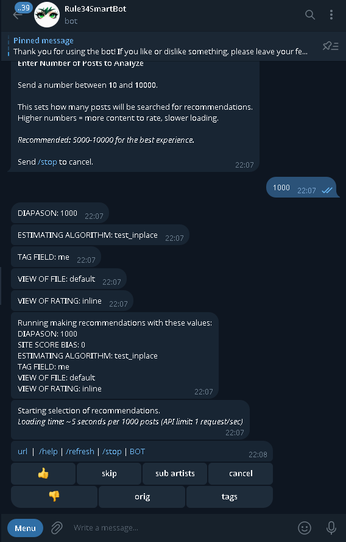
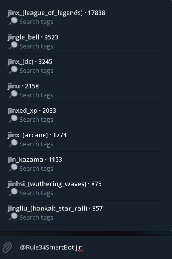
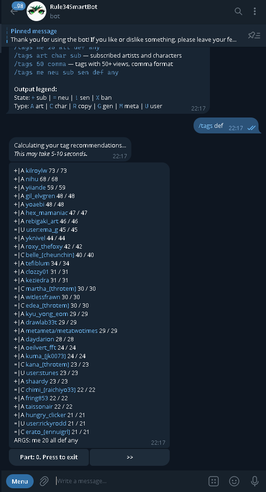

What it does
Rule34SmartBot turns rule34.xxx into a personalised feed.
Instead of scrolling search results, you rate posts — like, dislike, or skip — and the recommendation algorithms build a picture of your taste. The more you rate, the better the feed gets. Subscribe to favourite tags or artists and the bot keeps pulling new work from them as it appears.
Tag discovery is built in: inline autocomplete suggests tags as you type, and
/tags returns recommendations drawn from what you already like.
Power users can compose custom searches with /or and
/and, and pull original-quality files rather than Telegram's
compressed versions.
The interface speaks five languages (EN/RU/ES/FR/DE), and a companion channel posts trend digests and site stats (invite-only — the link lives on Linktree).
Free to use, with no ads and no paywalled features — development runs on voluntary donations via Telegram Stars. 18+ only.
Features
- Recommendations that learn — rate posts, and the algorithms adapt to your taste per session
- Tag & artist subscriptions — follow what you like, get new work as it lands
- Inline tag autocomplete — suggestions as you type, in any chat
- Tag recommendations —
/tagssurfaces tags derived from your own history - Custom searches —
/orand/andcompose multi-tag queries - Original quality — pull the uncompressed file, not Telegram's re-encode
- Five languages — EN / RU / ES / FR / DE
- Trends & stats digests — a companion channel posts rising tags, top artists and weekly digests (invite-only; link on Linktree)
- Free, no ads, no paywall — funded by voluntary Telegram Stars donations
- 18+ only
How to start
- Open the bot on Telegram and press Start.
- Choose your interface language.
- Confirm you are 18 or older by entering your birth year.
- Read and accept the terms and guidelines.
- Provide your Rule34 API credentials (from your own rule34.xxx account) — required to reach the menu; you can enter them fresh each time instead of saving them.
- Subscribe to a few tags, then start rating. The feed sharpens from there.
Works in any chat
Once you have started the bot and accepted its terms — steps 1 to 4 above —
you can type @Rule34SmartBot followed by a tag in any Telegram chat
and the bot suggests matching tags inline, without leaving the conversation.
Screenshots



/tags — recommendations from your own history.Before you start
18+
This bot surfaces adult content from rule34.xxx and is for adults only. It does not host or own any of that content — it searches and recommends what is already published there.